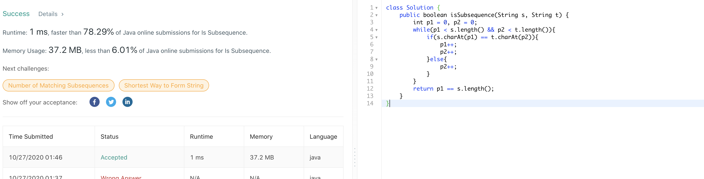
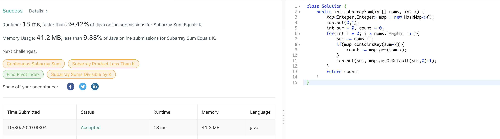
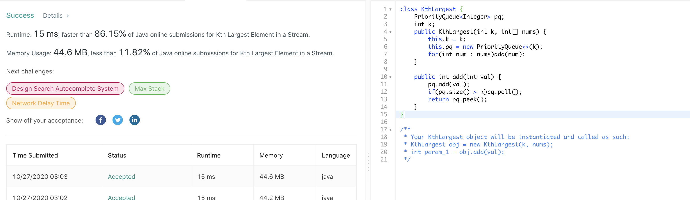
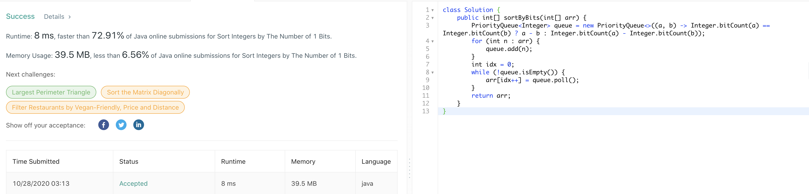
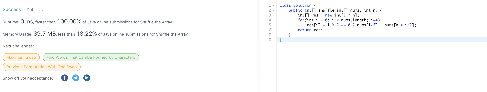
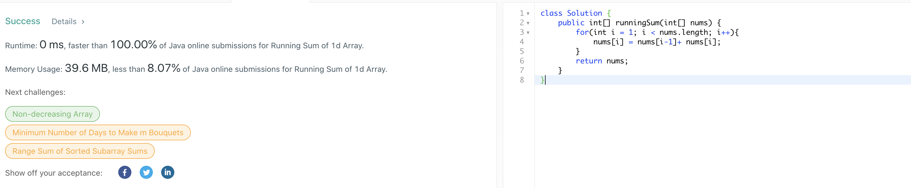

392. Is Subsequence
官方思路:
-
two pointers
思路整理：
典型two pointer 可解的问题，两个pointer p1和p2都为0，分别指向s和t的第0个index。当p1和p2均未达到s和t的长度时（未越界）,依次比较s.charAt(p1)和t.charAt(p2)，相同时将p1和p2均向后移动一位，因为此时两个位置匹配，即 同时向后推进寻找下一处匹配。当p1和p2对应index处字符不相同时，p2向后推进一位而p1保持不动，因为我们的最终目的在于找出s是否是t的subsequence，因此不能跳过s中的字符。循环结束后若s为t的subsequence，则p1必然等于s的长度， 因此返回 p1 == s.length()即可，如果不相等则不是subsequence。
560. Subarray Sum Equals K
官方思路:
-
presum + HashMap
思路整理：
此题使用计算presum出现频率 + hashmap的思路实现了o（n）时间。此思路的精妙之处在于当前总合sum和之前出现过的总合为sum-k的presum间接找出总合为k的subarray个数。例如我们在3，4，7中寻找总合为7的subarray个数，我们知道总合为0的subarray 个数有1个，即null，我们将（0，1）放入map。map的key为sum，value为该sum的subarray个数。之后我们从3开始遍历，将（3，1）加入map，接着（7，1）加入map，此时由于（0，1）存在于map中，因此一个sum为7的subarray出现，count变为1.接着遍历到7， 将（14，1）加入map，此时由于（7，1）存在于map中，因此又一个sum为7的subarray出现，count变为2，以此类推。通过当前sum寻找map中已经存在的presum为（sum-k）的个数，我们就可以在每一步找出当前新产生的和为 k 的subarray个数。
703. Kth Largest Element in a Stream
官方思路:
-
two pointers
思路整理：
看到stream和第k大自然想到priorityqueue，非常适合此题的场景。先写add方法，此处要点在于维护pq的大小恒定为k，现将val加入pq，之后检查若pq大小超过k则pop，之后return pq的队列顶元素也就是当前队列最小元素，也就是我们要的 第k大的元素。有了这个add方法后我们可以在constructor中直接调用该add方法构建初始pq，将nums中的数字装进pq并维持pq大小为k。
1356. Sort Integers by The Number of 1 Bits
官方思路:
-
PriorityQueue + define comparator
思路整理：
此题要求先比较bitcount大小，若bitcount相等则顺序尤数字原本的大小决定。看到这我们想到自定义comparator并且排序，而这两步骤恰好可以用priorityqueue数据结构解决，因为我们知道pq可以自定义comparator用来比较元素大小关系。 我们根据此题的条件构造comparator后使用pq对原数组进行排列，最后再用排序好的pq覆盖原数组。由于pq是按照从小到大的顺序，我们从index0开始依次使用pq poll覆盖原数组即可实现原数组按要求从小到大重新排序。
1470. Shuffle the Array
官方思路:
-
linear o（n） space
思路整理：
答案有bit等fancy的解法，这里看个最普通的o（n）space解法。遍历原数组，偶数位置将原数组i/2位置赋值给新数组，奇数位置则要将n+i/2位置数字赋值给新数字i位置。简而言之就是将旧数组按照奇偶位置交替映射到新数组，最后返回新数组即可。
1480. Running Sum of 1d Array
官方思路:
-
linear
思路整理：
很简单，从index1开始遍历数组，每次inplace地将nums【i】更新为nums【i-1】+nums【i】，循环结束返回nums即可。
